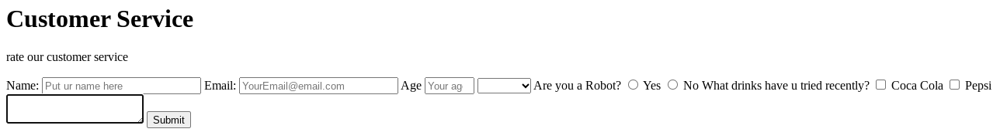

Servey form
A customer service form is a structured document designed to capture essential information from individuals seeking assistance or support. It typically includes fields for the customer's contact details, a description of the issue or inquiry, and relevant details to facilitate a prompt and accurate response from the customer service team.
Link to project 1 code 